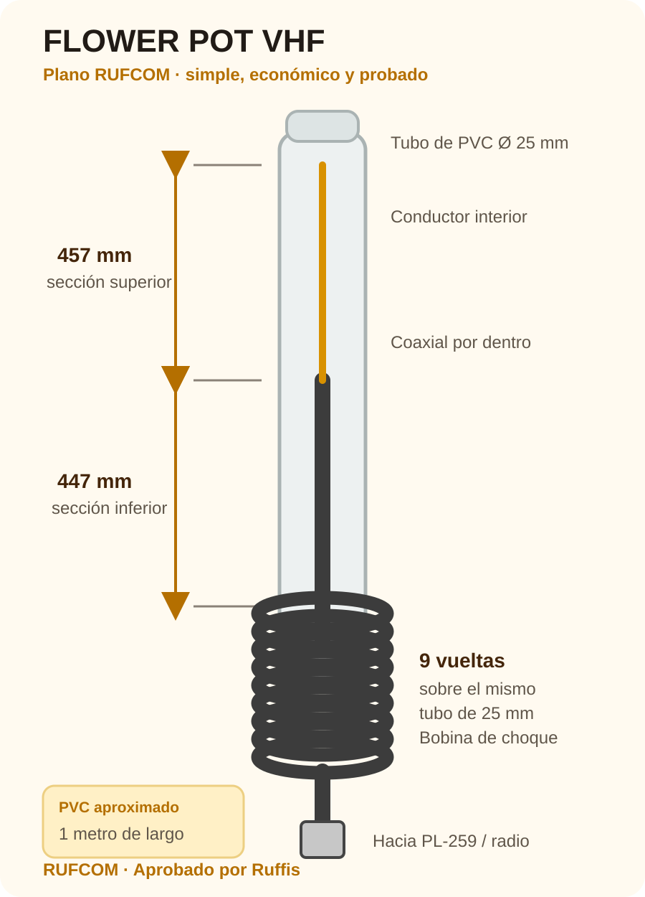
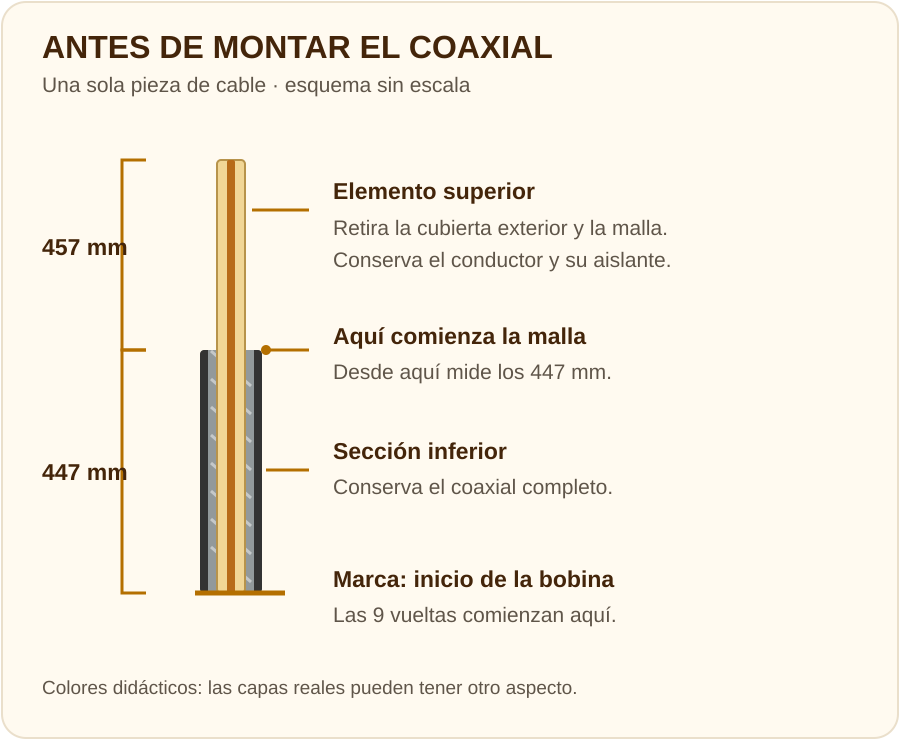

Antes de gastar más en una antena comercial, vale la pena probar una Flower Pot.
Materiales básicos
Plano de construcción
Este plano corresponde a la Flower Pot de media onda para VHF / 2 metros. Las medidas son una referencia inicial; el cable y el tubo pueden cambiar el ajuste. Comprueba la antena con tus materiales antes de darla por terminada.

En esta antena se forma enrollando el cable coaxial alrededor del tubo. Reduce las corrientes de radiofrecuencia que circulan por el exterior de la malla del cable y ayuda a separar la antena del cable de alimentación.
Construcción paso a paso
Prepara las dos secciones antes de montar el cable en el tubo. El coaxial permanece en una sola pieza.

Prepara el tubo
Usa PVC de aproximadamente 1 metro y 25 mm de diámetro. Deja espacio para sujetarlo al soporte.
Forma el elemento superior
Desde un extremo del coaxial, retira 457 mm de cubierta exterior y malla. Conserva el conductor central y su aislante; evita dañarlos.
Marca el inicio de la bobina
Desde donde vuelve a comenzar la malla, mide 447 mm hacia la bajada. Marca ese punto: allí empieza la bobina. Esa sección conserva todas sus capas.
Prepara la entrada y la salida
Prueba 9 vueltas sobre el tubo para medir el espacio que ocupan. Prepara los orificios de entrada y salida y suaviza sus bordes.
Monta el cable y forma las 9 vueltas
Introduce el elemento hacia arriba hasta la marca. Sostén su extremo con nylon. Enrolla las 9 vueltas por fuera y pasa la bajada por el orificio inferior, sin alterar los 447 mm.
Termina la conexión
Instala el PL-259 al final de la bajada según las instrucciones del conector. Para el UV-5R, revisa la compatibilidad del adaptador SMA / SO-239 en Partes y piezas.
Comprueba antes de cerrar
Mide la ROE en el montaje previsto antes de cerrar la tapa. Protege las uniones frente al agua y deja la parte inferior con drenaje.
Revisa las medidas, las uniones y que el cable no haya quedado dañado al pasar por el tubo. Usa un instrumento adecuado siguiendo su manual; registra frecuencia, ROE, cable y ubicación de la antena. Si la lectura es inesperada, revisa el montaje antes de transmitir normalmente. Las medidas del plano no sustituyen esa comprobación.
Conoce los instrumentos de mediciónReferencia del procedimiento: Flower Pot de media onda · VK2ZOI (en inglés). Esquemas explicativos de RUFCOM. Guía revisada el 7 de octubre de 2026.
Experiencia RUFCOM
Hemos construido Flower Pot usando distintas longitudes de cable y obtuvimos excelente desempeño en ambos casos.
Excelente desempeño.
Excelente desempeño.
Conexión al Baofeng

Una solución simple, económica y probada por RUFCOM.